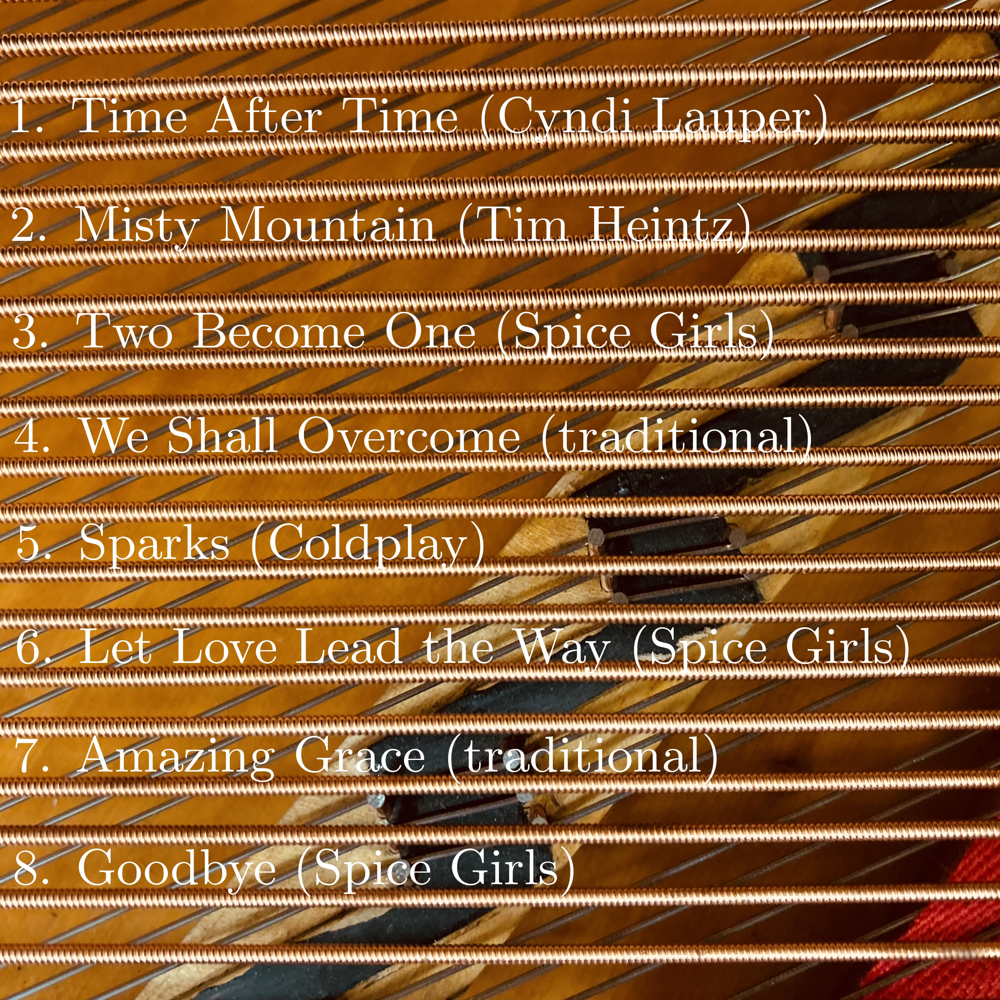
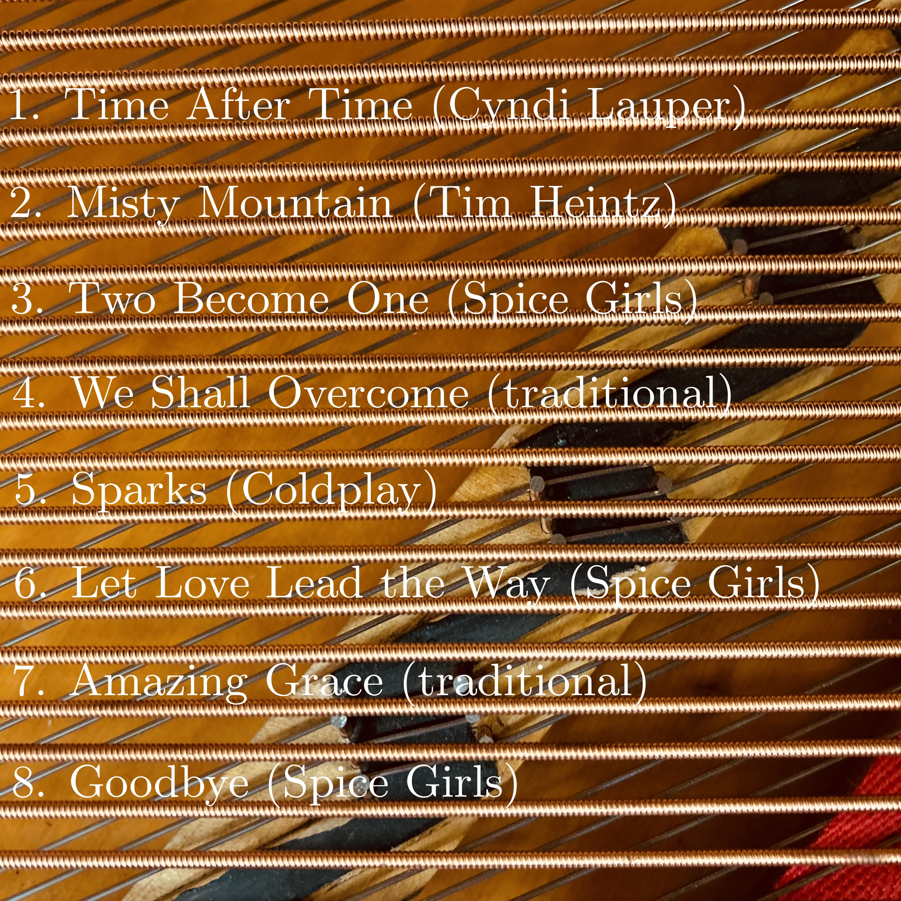

Peace... Peace... Peace... (2025)
 

[Bandcamp] [picture]
- Time After Time (Cyndi Lauper)
- Misty Mountain (Tim Heintz)
- Two Become One (Spice Girls)
- We Shall Overcome (traditional)
- Sparks (Coldplay)
- Let Love Lead the Way (Spice Girls)
- Amazing Grace (traditional)
- Goodbye (Spice Girls)
↑ Return to music page